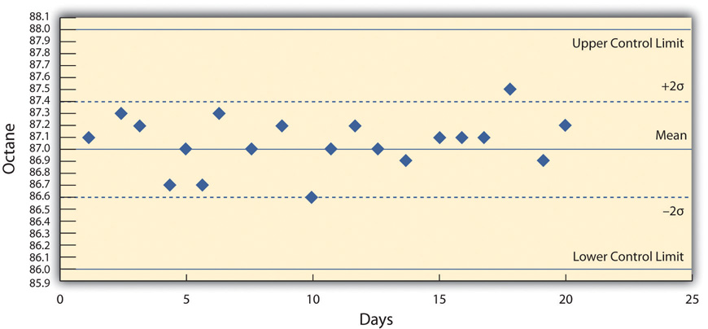
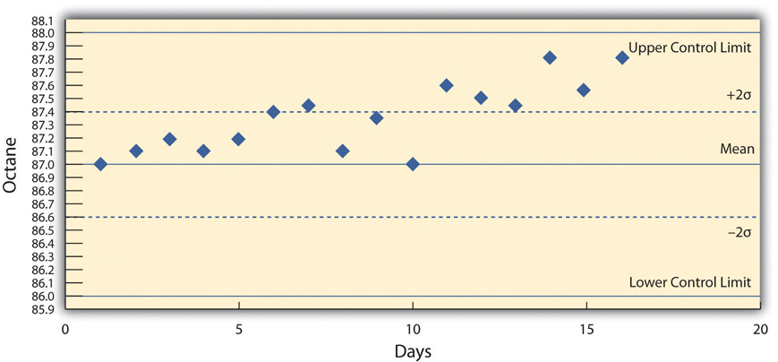

Quality management is an approach to work that has become increasingly important as global cooperation and competition have increased. A review of the history of quality management explains why it is so important to companies and why clients often require projects to document their processes to satisfy quality standards.
Prior to the late 1700s, products such as firearms and clocks were made as individual works where the parts were adjusted to each other so they could work together. If a part broke, a new one had to be made by hand to fit. In 1790 in France, Honoré Blanc demonstrated that he could make musket parts so nearly identical that a musket could be assembled from bins of parts chosen at random.Ken Alder, “Innovation and Amnesia: Engineering Rationality and the Fate of Interchangeable Parts Manufacturing in France,” Technology and Culture 38, no 2 (April 1997): 273–311. The practice of making parts to a high level of accuracy in their dimensions and finishes made the parts interchangeable. The use of interchangeable parts became the founding principle of assembly line manufacturing to produce all manner of goods from sewing machines to automobiles. The manufacturers of firearms and weapons were often the leaders in improving quality because reliable and safe operation of weapons and their rapid repair is a matter of life and death.
During World War II, factories were converted from manufacturing consumer goods to weapons. War plants had to make large numbers of parts as fast as possible while doing it safely for the workers and for the service members who used them. Important improvements in quality control (QC)Management of production standards through statistical interpretation of random product measurements.—the management of production standards through statistical interpretation of random product measurements, which emphasizes consistency and accuracy—were made during this period. A key figure in the history of quality management who was an important person in the war effort was Walter Shewhart at Bell Telephone Laboratories. Shewhart recognized that real processes seldom behaved like theoretical random distributions and tended to change with time. He separated causes of variation into two categories: chance causeVariation due to random events. and assignable causeVariations that can be attributed to a particular event or influence.. Chance causes could be ignored if they did not cause too much variation, and trying to eliminate them often made the problem worse, but assignable causes could be fixed. To help distinguish between variations caused by random events and trends that indicated assignable causes, Shewhart introduced the control chartScatter chart with time on the horizontal axis and measurement scale on the vertical axis. It also displays the mean and control limits. It may mark two standard deviations from the mean., which is also known as a type of run chartChart of measurements that shows variations as the process progresses in time. because data are collected while the process is running. A control chart has time on the bottom axis and a plot of sample measurements. The mean, upper control limit, lower control limit, and warning lines that are two sigma from the mean are indicated by horizontal lines.
The refinery quality control manager takes samples each day of the 87 octane gasoline for twenty days and charts the data on a control chart, as shown below.
Figure 10.6 Control Chart Displaying Variations Due to Chance Causes
She recognizes that the highest and lowest measurements are not part of a trend and are probably due to chance causes. However, the control chart from the next twenty days, as shown below, indicates an upward trend that might be due to an assignable cause. She alerts the process manager to let him know that there is a problem that needs to be fixed before the product exceeds the upper control limit. This might indicate the need to initiate a project to fix the problem.
Figure 10.7 Control Chart Displaying Variations That Might Be Due to an Assignable Cause
The most influential person in modern quality control was an American who was a hero in Japan but virtually unknown in the United States. W. Edwards Deming worked with Shewhart at Bell Labs and helped apply Shewhart’s ideas to American manufacturing processes during World War II. Following the war, American factories returned to the production of consumer goods. Many of the other major manufacturing centers in the world had been damaged by bombing during the war and took time to recover. Without the safety needs of wartime and with little competition, quality control was not a high priority for American companies.John Dowd, “How the Japanese Learned to Compete,” Asia Times, October 27, 2006, http://www.atimes.com/atimes/Japan/HJ27Dh01.html (accessed August 11, 2009). Management in the United States focused on increasing production to meet demand and lowering costs to increase profits.
After the war, while the United States occupied Japan, Deming was asked by the U.S. Department of the Army to assist with the statistics of the 1950 census in Japan. Kenichi Koyanagi, the managing director of the Union of Japanese Scientists and Engineers and a very influential industrialist, asked Deming to speak to twenty-one top industrial leaders on the topic of global strategy for Japanese industry. Deming went beyond Shewhart’s work and talked about his philosophy of quality manufacturing and how the responsibility for quality begins with management. He explained that a corporate culture devoted to producing high-quality products would result in less waste, lower costs, greater client loyalty, and greater market share. With Koyanagi’s support, Deming’s ideas were widely adopted by these influential leaders.
Deming described his philosophy as a system of profound knowledge, which has four parts:
In 1950, the Japanese created the Deming prizeAward for quality in Japan named after W. Edwards Deming, an American. in Deming’s honor, which is awarded to an individual and a company for major advances in quality improvements. In 1960, Deming was awarded the Order of the Sacred Treasure, Second Class by the Prime Minister on behalf of Emperor Hirohito.
By the 1970s, Japanese companies had a reputation for high quality and were taking market share from American companies, but Deming’s teachings were virtually unknown in his own country. It was not until 1980 that America became aware of Deming when his work was described in an NBC documentary titled If Japan Can, Why Can’t We?John Dowd, “How the Japanese Learned to Compete,” Asia Times, October 27, 2006, http://www.atimes.com/atimes/Japan/HJ27Dh01.html (accessed August 11, 2009). By then, Deming was eighty years old and the producer of the show originally assumed he was dead.Thomas J. Boardman, “The Statistician Who Changed the World: W. Edwards Deming, 1900–1993,” The American Statistician 48 (August 1994): 179–87.
In 1982, Deming’s book was published and later retitled Out of Crisis, in 1986.W. Edwards Deming, Out of the Crisis (Boston: MIT Press, 1982). It was aimed at explaining his system to American manufacturers and the American public. In the book, Deming described fourteen principles of management to guide the implementation of his philosophy. Some of them were challenges to Western managers and very different from the thinking that was prevalent at the time. In brief, they are as follows:
Between 1979 and 1982, Ford Motor Company lost $3 billion, and they were looking for solutions to their problems. They chose to apply Deming’s approach to develop the new Taurus-Sable model and by 1986 had become the most profitable American auto company.Gabor, A. (2001, June 13). Quality revival, Part 2: Ford embraces Six Sigma. New York Times (Late Edition (east Coast)), p. C.5. Retrieved October 24, 2010, from ProQuest National Newspapers Core. (Document ID: 74042886).
Ford adopted a Japanese approach to quality known in America as total quality management (TQM)Philosophy of managing quality adapted from a Japanese method that includes kaizen, atarimae hinshitsu, kansei, and miryokuteki hinshitsu.. TQM in Japan has four major components:
According to Peter B. Petersen,Peter B. Petersen, “Total Quality Management and the Deming Approach to Quality Management,” Journal of Management History 5, no. 8 (1999): 468–88. TQM differs from the Deming approach in four fundamental ways:
Many poorly qualified consulting firms provided training in TQM to American companies. The approach worked in some cases but not in others where it was applied superficially, and the movement’s credibility was diminished.
Another approach to quality management in the United States was formulated at Motorola in 1986 and was named Six Sigma (6σ)Quality management system that give titles to specialists and requires a cost-benefit analysis.. The Six Sigma practices were based on Deming’s work, TQM, and others and had similarities regarding continuous efforts at improvement involving everyone at the company. It emphasized a clear focus on achieving quantifiable financial returns from any Six Sigma project. To determine the financial return on a quality initiative, the cost of quality (COQ)Total cost of efforts to improve quality plus the cost of failure. must be determined. The cost of quality has two parts: the cost of prevention and the cost of failure (or nonconformance). The cost of quality is the sum of the cost of prevention and the cost of failure. If spending more on prevention reduces the cost of failure by an even greater amount, the total cost of quality is reduced.
Cost of prevention
Cost of failure
Six Sigma identified individuals as experts in quality and awarded titles like Champion and Master Black Belt. The name Six Sigma refers to a process that has six standard deviations from the mean to either control limit that would ensure virtually zero defects. (In practice, the Six Sigma approach allows for a 1.5 sigma drift, so it is really a 4.5 sigma standard that allows approximately 3.4 defects per million products.) This approach was adopted by Jack Welch at General Electric with great success. By the late 1990s, about two-thirds of the top five hundred companies in the United States had begun Six Sigma projects, including Ford, which had allowed its quality programs to slip. To provide encouragement and a consistent standard, the U.S. government created the Malcolm Baldrige National Quality AwardU.S. award for quality named after a former secretary of commerce. in 1987 to encourage companies to improve quality; the award was named for Malcolm Baldrige who was the U.S. secretary of commerce from 1981 to 1987.National Institute of Standards and Technology, “Frequently Asked Questions about the Malcolm Baldrige National Quality Award,” November 25, 2008, http://www.nist.gov/baldrige/index.cfm (accessed August 14, 2009). The criteria used to determine award winners are as follows:
Trade between countries increased as countries recovered from WWII and began producing consumer goods. In 1948, the General Agreement on Tariffs and Trade (GATT) established the rules for international trade in the postwar world. Through years of negotiations based on GATT, the World Trade Organization (WTO)Negotiating forum for improving trade relationships between countries. was created in 1995. The WTO is a negotiating forum where governments can discuss ways to help trade flow as freely as possible.World Trade Organization, “Understanding the WTO: Basics,” http://www.wto.org/english/thewto_e/whatis_e/tif_e/fact1_e.htm (accessed August 14, 2009).
Increases in trade forced companies to improve the quality of their products to compete for clients and to exchange parts reliably between companies that used parts suppliers. To assist in developing standards for quality that would be the same between countries, an organization of 158 national standards groups formed the International Organization for Standardization (ISO)Degree to which a set of inherent characteristics fulfill requirements., which is headquartered in Switzerland. For example, a company might require a parts supplier to meet certain ISO standards if it wants to bid on contracts. There are thousands of ISO standards, and they are grouped by their numbers. The ISO 9000 group of standards relate to quality:
ISO 9001. Standards for evaluating the quality management processes in an organization. It has five parts:
Recommended steps for implementing a quality management system (QMS) are as follows:
Balancing Cost of Prevention to Cost of Failure
Describe a project activity where the cost of prevention might be much higher than the cost of failure and unlikely enough to accept the risk of its failure rather than pay the cost of prevention. Similarly, describe a project activity where the cost of prevention is smaller than the cost of failure.